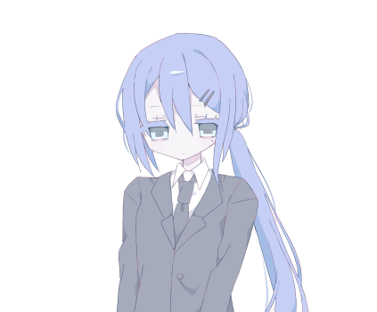
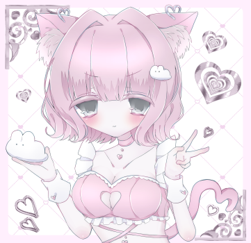
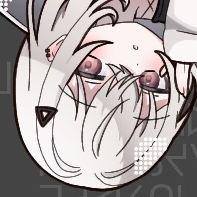

ここについて
ABOUT THIS ROOM「インターネットほけんしつ」は、誰でもふらっと立ち寄れる、ゆるい繋がりのコミュニティサーバーです。
学校や仕事、SNSの喧騒に疲れた時。
誰かと話したいけれど、気を遣いたくない時。
ただ誰かの作業音を聞きながら、自分も何かしたい時。
そんな時に、そっとドアを開けてみてください。
ここには厳しいルールも、無理なコミュニケーションの強要もありません。あなたのペースで、心地よい距離感を見つけてください。
Image Placeholder
ほけんしつっぽいイラスト
おへやの案内
SERVER CONTENTSギャラリー
メンバーが描いたイラストや撮った写真を集めた特設ギャラリー。ここでしか見られない作品もたくさん。
見にいくざつだん室
その日あったこと、食べたもの、なんとなく思ったこと。何を話してもいいし、話さなくてもいい。一番人が集まるメインの空間です。
おだやか
穏やかに過ごしたい人向け。ゆっくり雑談したり、相談したり、安心して言葉を交わせる空間です。
こんとん
思ったことをそのまま吐き出したい人向け。感情的な話、重たい話、ネガティブな話、勢いのある雑談なども歓迎です。
かんりにん
ADMINISTRATORSこの場所を維持し、皆さんが安心して過ごせるようサポートしている4人の管理人です。困ったことがあればいつでもメンションしてください。
krsm
インターネットほけんしつに最初に立ち入った生徒。好きな食べ物は白菜

ここのえ
[Test Message]

Minyooom
「名前が1億個あるらしい」

Metalepsis_
害を与えるバームクーヘン、ハームクーヘン